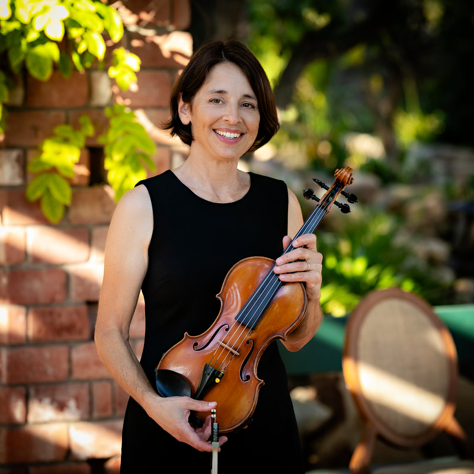

Emily Sommermann
Violinist and SBSQ manager Emily Sommermann brings decades of orchestral, chamber and teaching experience to the ensemble. Trained in New York, she earned her Bachelor of Music from SUNY Albany and Master of Music from SUNY Stony Brook, studying with musicians including Isidor Cohen of the Beaux Arts Trio.
Her performance background includes the Albany, Long Island and Springfield symphonies as well as extensive work in Santa Barbara, including the Santa Barbara Symphony, Santa Barbara Chamber Orchestra, Santa Barbara Civic Light Opera Orchestra and Santa Barbara Chamber Players. Emily is also an Instructor of Violin at Westmont College and directs chamber music at Cate School. She leads SBSQ with a focus on polished playing, thoughtful preparation and a relaxed experience for clients.